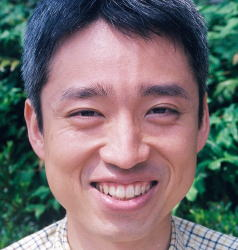
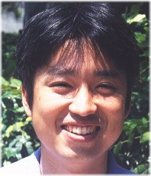
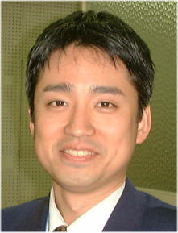

[健康,東洋医学] いがぴょんの健康に関するメモ
| 広告: イマドキのIDE事情: Eclipseベースの統合翻訳環境「Benten」を使ってみよう 09/27 たげぞうさんの手による Benten 紹介記事! |
| いがぴょんの健康メモ |
このページは かなり私個人の主張・信条が入っています。私は これが正しいと思っていますが、世間的な一般認識とは かなり異なっている点を理解の上お読み下さい。※自分の考えと違う主張について知ることを嫌われる方については、これ以降の文章は読まれないことをおすすめします。
私は 日本に古くから伝わる東洋医学によって とても助けられています。日本古来の東洋医学の中で、鍼灸というものがあります。私は 鍼灸のジャンルのうち、日本式『整体はり』にかかっています。 私は 日本式『整体はり』に とてもお世話になり、また助けられながら 健康を維持向上しています。
日本式『整体はり』に通いだす直接的なきっかけは、強度の飛蚊症や視野が急に狭まっってきたことによるものです。もともとは はり治療という選択肢は知っていたのですが、どうも怖かったので 私はこれを最後の手段と定義していました。しかし 強度の飛蚊症によって 視界の中で 見えない箇所が ぐわわっと広がり しかも目が痛く とてもコンピュータを使った仕事なんてできそうにない状態になったからです。というか 普段の生活でも この症状はかなり問題でした (コンピュータの仕事って、デフォルトでも目に来ますからなぁ…) 日本式『整体はり』に通い出してからは 東洋医学的発想なのですが、『内臓が悪い』というのが直接的原因として定義され、内臓の改善のために からだの歪みを取るところから治療は入りました。もともと私は 子どもの時から 健康診断の際に 『脊椎側彎症っぽい』なんて言われていたのですが、大人になるに従って それの矛盾が蓄積していたようなのです。
というメカニズムによって 強度の飛蚊症が発生している、というのが 先生の初見の所見でした。
で 実際に 数年通院した結果、ここ最近 飛蚊症は ずいぶん緩和されてきています。それ以外にも
日常的健康という面でも かなり改善はされだしてきました。整体はりは 私にとっては
絶大な効果がありました。視野の広さも 最悪の時から比較すると ずいぶん復元してきました。(ご協力頂いている会社の方々にも感謝しています)
また、オマケとして 体重が随分減ってきたり またスリムになっています。いろんな意味で
身体も軽くなってきました。
しかし、私が通っている整体はり は はり治療のジャンルの中でも マイノリティーであるようです。はりによって整体できる などとは信じていない鍼灸師も存在するようです。でも 実際 はりだけで骨は動きます。なんといっても、私は身を以て知っているからです。ぐぐぐっと動きます。(人によっては 骨の移動を感じない人もいるようですが… 個人差あります)
一方 整体によって骨格のずれや筋肉のずれが修正されたら 血行が良くなり 健康維持向上につながる、ということそのものについては 最近の西洋医学でも認知され始めているようです。およそ整体などのジャンルは もともと 東洋医学が 随分先行していたはずなのですが、最近の西洋医学について 少しずつ 東洋医学が到達しているレベルについて気がつき始めているようです。西洋医学も意外にやるじゃんって感じです。でも まだまだ このジャンルは 東洋医学の方が 一日の長があるようです。
基本的に 私は伝統を持った 日本の民間医療については、ある程度は信じる傾向にあります。その中でも 日本式鍼灸は 国家資格制度もあり 厚生労働省から 治療行為として認可されている 数少ない民間医療行為なのです。べつに 国家のお墨付きがあるかどうかは 私にはどうでも良いのですけれどもね。しかし、最近 歴史の浅い 民間医療類似行為や 舶来医療類似行為が世間的に横行して流行しています。このことは 良い傾向だとは思っていません。それら歴史の浅い医療類似行為と 伝統ある医療行為とをまぜこぜに捉えられかねないからです。とはいえ、私が本当に信じて そして利用しているのは、日本式『整体はり』という 医療行為に分類されている中でも、さらに狭いジャンルのものについてなのです。というのも、昔 あんま・マッサージに通っていましたが、肩こりが少し緩和などはありましたが、根本的なところ(強度の飛蚊症など)は全然治りませんでしたから…。実際に自分に効いて 効果があったものだけしか信じられませんからね…。しかし悲しいかな あんま・マッサージについては、健康保険が適用できる 数少ないケースがあるのですが…。健康保険が適用されれば、随分支払う金額は減るのですけれどもね。
とはいえ、私は 整体はり を万人に勧めるわけではありません。これは 整体はりが
人によって向き・不向きが分かれる治療であることを 知識として知っているからです。また
整体はりは 随分通院しないと効果が出ない場合もありますし、なによりも費用が結構かかるという点も
ハードルとしてものすごく大きいと思います。
しかし例えば 西洋医学ではの各種検査では健康なのだけれども、実際に体調不良を抱えて非常に困っている方、などには
整体はり は 効果が期待できる可能性の一つとして 確実に存在しているのだ、ということは
まあ 伝えられるかも、とも思います。自分自身としては 日本式整体はり が無くてはならないものなのですけれどもね。
| いがぴょん近影変遷 |
体調の変遷が把握しやすいので、その当時の写真を並べてみました。(トランプのカードじゃないんだから並べるというのも
なんですが)
2001.07と2003.06とは 体重はそのものあまり変化無いはずなのですが、見た感じは
かなり変わっています。仕組みとしては、顔のむくみが取れたものと考えています。



| 変更履歴 |